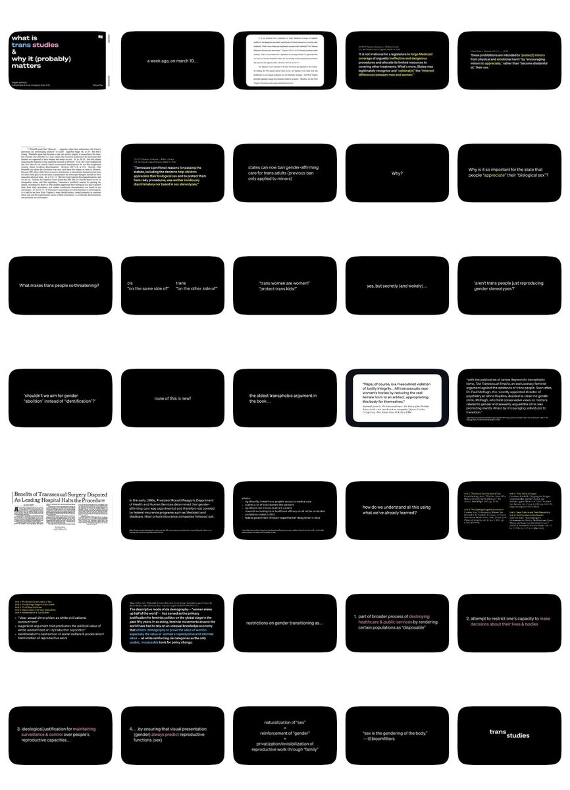

amber
@amber_medusozoa
我们文科生不背这个锅 我的PPT都是黑底白字 每页尽量只放一行字

IRIS郁子
@1ris_sama
真的🏳️🏳️🏳️我不明白你們文科生思維 ppt做的再好看又怎麼樣 天天泡在形式主義上面 字體顏色和背景很相近 能看出來很搭很適配啊可是有夠難分辨的 在kcl讀一年水碩本科聽都沒聽過一看就知道是水學歷去了 還有一個在monash也是沒話講💧我討厭你們 https://t.co/3ivx49RPyW